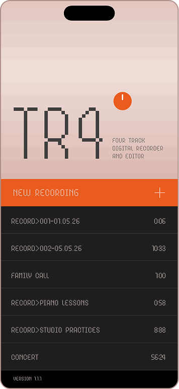
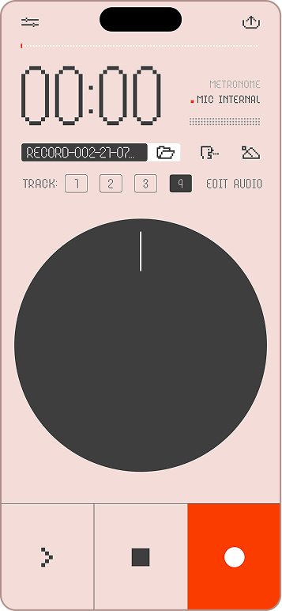
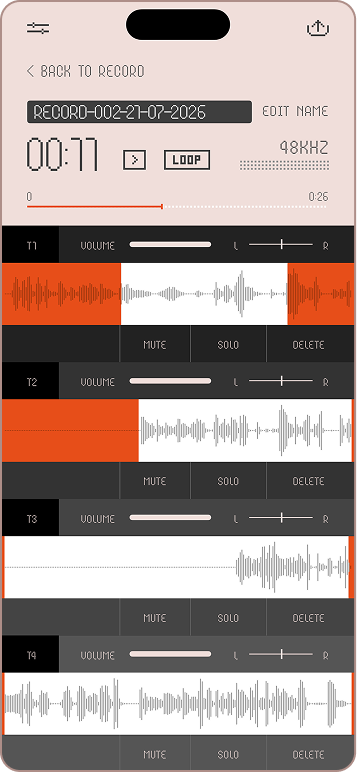
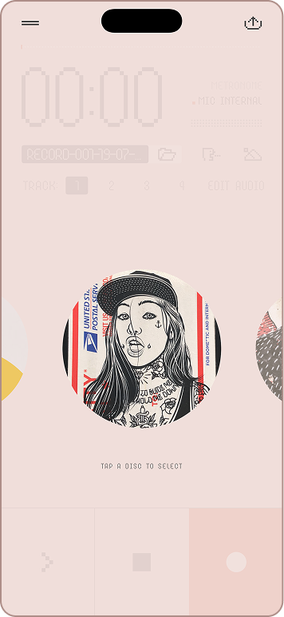
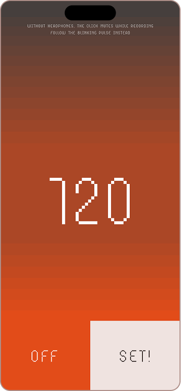

A pocket tape machine for iPhone. Spin the disc, scrub the tape, overdub four tracks — and let your groovebox drive the recording over USB.
iPhone · iOS 26 · free beta via TestFlight
Plug in over USB and TR4 recognizes the device, captures true stereo, and arms itself. Press play on the K.O. II — recording starts on the first sound. Stop the groove — the take ends, rewinds and re-arms for the next pass. Record groups A/B/C/D onto four tracks without ever touching your iPhone.
A disc with real physics — drag to scrub with varispeed — even in reverse. Flick it and it spins down like real hardware.
Four-track overdub — record a track while the others play. Mute, solo, volume, pan and non-destructive crop per track.
USB stereo in — class-compliant devices record in true stereo at 48 kHz, 32-bit float.
Auto-record on USB signal — threshold-armed with noise calibration. Your hardware starts and stops the tape.
Metronome with count-in — 3-2-1 count-in, and a visual beat — screen pulses on the grid when the click would leak into the mic.
Disc skins — hold the disc to swap its look. Thirteen designs, from vinyl to street art.
Export anywhere — mix or separate stems, as WAV, AIFF or M4A — straight to the share sheet.
Auto-save — every take is saved as raw audio plus edits. Reopen projects from the recents list.
Transcription — turn voice takes into text, in your language, on device.
iPhone · iOS 26 · free beta via TestFlight




